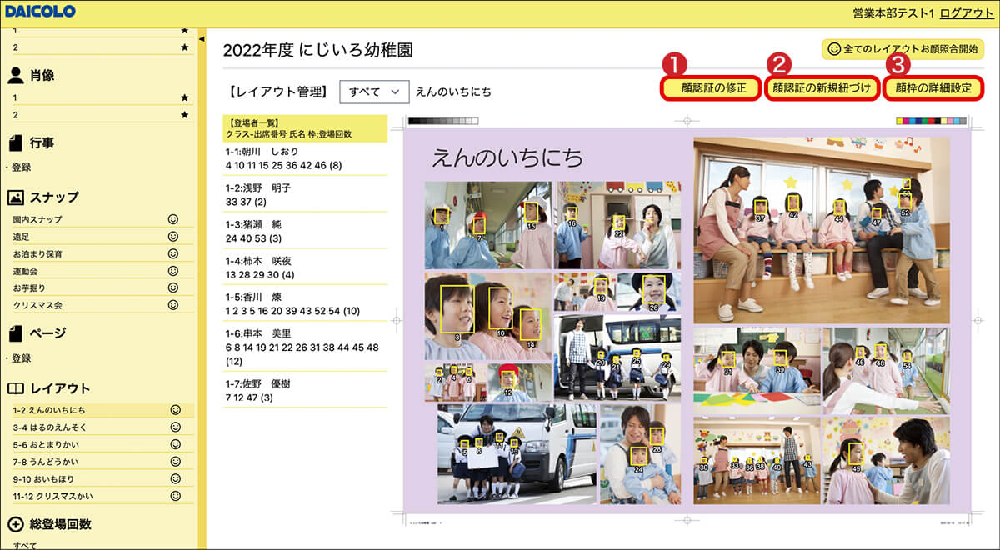

アルバム製作の作業時間短縮にお役立ていただけます！
【ダイコロ顔認証システム2.0】
利用写真館各位
【ダイコロアルバム顔認証2.0】をご利用いただき、ありがとうございます。
寄せられたご意見・ご要望をもとに、「顔認証の修正」「顔枠の詳細設定」機能を追加し、より便利にご利用いただけるようになりました！
ぜひご操作をお試しください。アルバム制作の作業時間短縮により一層お役立ていただけますと幸いです。
※「顔認証の修正」機能は先生権限でもご利用いただけます。
追加機能内容！
❶顔認証の修正
❷顔枠の詳細設定
その他ボタンの追加

＜機能詳細と活用例のご紹介＞
顔認証の紐づけをラクラク修正！
❶顔認証の修正
システム上でクラス・氏名の紐づけや顔認証の修正を行うことができます。
【活用例】
お困りごと①：顔認証でクラス・氏名の紐づけに誤りがある生徒がいる
これで解決：[顔認証の修正]ボタンから生徒の顔枠をクリックし、正しいクラス・氏名を選択。
簡単に紐づけし直すことができます。
お困りごと②：顔認証されなかった生徒がいる
これで解決：[顔認証の修正]ボタンから顔認証したい生徒の写真をクリックして、名表から正しいクラス・氏名を選択してください。
顔枠の色変更でもっと見やすく！
❷顔枠の詳細設定
顔認証後に表示される顔枠の色を9色の中から変更できます。
すべての顔枠を一括で変更できるほか、クラスごとに個別設定することも可能です。
【活用例】
お困りごと：写真によっては黄枠が見づらい…
これで解決：[顔枠の詳細設定]ボタンを押して顔枠の色を9色の中から選択。
すべての顔枠を一括変更/クラスごとに個別設定するかを選択できます。
枠色の種類▼
その他ボタンの追加
●名表ページ：全削除ボタンを追加
→クラスごとに名表を全削除することができます。
※名表を削除すると、対応する肖像写真も同時に削除されますので操作の際は十分ご注意ください。
●肖像ページ：全選択ボタンを追加
●スナップページ：削除ボタンを追加
使い方の詳細はシステム下部バーの「操作マニュアル」をダウンロードしてご確認ください。
【ダイコロ顔認証システム2.0】では、より便利に、より効率的にアルバム製作をお手伝いするため、日々改善に努めております。
ご不明な点やご要望などは、下記までご連絡ください。
ダイコロ株式会社 IT事業本部
TEL ：072-819-5373(平日10:00～18:00)
mail：info-fr@daicolo-netservice.jp
|